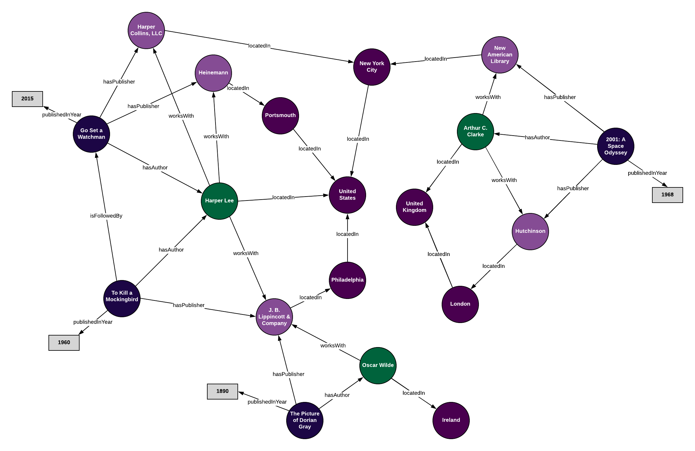
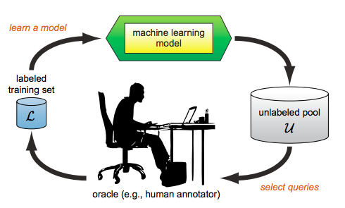

About me
I'm Shruthi, a second year Master's student at the University of Alberta. My research interests lie primarily in Data Science and Software Development, even though I've dabbled quite a bit in other branches of Computer Science as well. My technical expertise can be fathomed from my list of projects while the fun side of me can only be deduced by a talk with me! I savor books and love to debate anyday on how books are definitely better than movies. Other than books, I enjoy playing football and board games in my spare time.
M.Sc Computing Science : University of Alberta, Edmonton
Expected Graduation : Summer 2021
Graduate coursework: Introduction to Machine Learning, Introduction to NLP, Interactive Machine Learning, Internet of Things.
B.E Computer Science : College of Engineering, Guindy, Anna University
CGPA : 3.92/4.0
Graduated : Spring 2019
Undergraduate coursework: Algebra and Number Theory, Data Structures and Algorithms, Calculus I and II, Software Engineering, Operating Systems, Database Management, Web programming, Information Retrieval, Computer Vision
Dec 2020 - Present
ML Research Scientist Intern, Famwork

Demonstrated strong foundational skills in math and data science by conducting research in integrating machine learning models into electronic health record systems. Spearheaded the automation of the telehealth system for the minimum viable product, that was used to forecast diseases the patient was susceptible to acquire, based on his/her medical history. Assisted in conducting interviews for hiring research and full-stack development associates.
Sep 2019 - Present
Head Teaching Assistant, University of Alberta

Courses: Introduction to Foundations of Computing, Computer Networks, Graduate teaching assistant training.
Promoted to head teaching assistant in Spring 2020, prepared graduate TA training material and supervised 20 other TA’s.
Summer 2018
Software Engineer Intern, Makesto Infotech Private Limited
Developed a JavaScript plugin, which was used internally for supporting 3D models in the GL Transmission Format. Established a framework for achieving dimensionality reduction of 3D models, with minimal data loss, in Python. This was a very important part for the mobile visualization of a target object with minimal load times. Worked in a fast-paced agile Scrum environment and participated in daily stand-up meetings.
Summer 2017
Software Engineer Intern, L&T Technology Services
Worked on and contributed to the front-end of the web application assigned to my intern team. Individual contributions include developing the login, sign-up and deposit pages using HTML5, CSS3 and JavaScript, as well as contributing to the software documentation. Worked in an agile environment and learnt about the different agile methodologies for software development.
RELATION EXTRACTION IN KNOWLEDGE BASES - KNOWLEDGE GRAPHS

A Natural Language Processing based project that focuses on relation extraction between a pair of entities in Knowledge Bases using a clustering algorithm. Created using Python and tested on KnowledgeNet relations.
USE : Can be used to identify and predict relations between a pair of entities, that can improve search results in Knowledge Bases.
Visual Aid system - Patented
A Visual Aid storytelling system used in story telling sessions for visually challenged children.
Consisted of an interactive computer and sensor system and when scenes from stories were fed to the computer, the sensors rose to depict the scene.
The visually challenged children could also place their hands on the sensors so as to feel the scene unfolding through their hands.
NOISE ELIMINATOR FOR ACTIVE LEARNING - NEAL

An Interactive Machine Learning based algorithm that helps produce automated systems that provide highly accurate predictions, with a low number of training instances .
USE : Can be used to improve predictions of any automated system and needs only a small subset of labelled data to produce stellar results.
EARLY DETECTION OF DEPRESSION USING LINGUISTIC METADATA
A Machine Learning based project that detects the early onset of depression using the RSDD dataset and processed using Natural Language Processing.
Created using Python and the Reddit Self-reported Depression Diagnosis (RSDD) dataset.
USE : Can be used to detect depression in individuals and the diagnosed participants can be urged to seek professional help.
Platform to assess geriatric frailty using smart wearable devices – IoT
An Internet of Things based system that assesses geriatric frailty using four smart devices which can be monitored from afar. Based on a smart condo environment.
USE : Can be used to detect and asssess frailty in individuals in real time.
EARLY DETECTION AND PREDICTION OF LUNG CANCER
A Machine Learning based project which focused on detecting and predicting lung cancer by automatically analyzing CT scans. Created using Python.
USE : Can be used to detect lung cancer, given a set of CT scans of the lungs.
3D MODELS WORDPRESS PLUGIN
A WordPress plugin to aid the upload of 3D models in the GLTF format, using the URL and file name.
USE : Can be used to render 3D models immediately on the web, with Lilliputian loading times.
Memotion Analysis - SemEval 2020
Memotion (Meme + Emotion) Analysis is the task of analyzing sentiments from memes, typically posted in various social platforms, and classifying them into positive and negative sentiments. This system represents an approach to extract and analyze embedded texts of a meme from a released data set (training and trial) of a SemEval-2020 task titled as "Memotion Analysis".